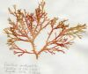

| Tipos
morfológicos de talofitas |
Características |
Pseudoplasmodios
(intermedio entre protofitas y talofitas)
|
Amebas que se congregan formando un
falso plasmodio para formar un esporangio. Unas células
sirven de soporte y otras se dispersan transformadas en
esporas. Ej. Acrasiomicetos
|
Cenobios
(también intermedio entre protofitas y
talofitas, conocidos también como consorcios de
agregación) |

|
En el interior de cada célula se
forma (por mitosis y divisiones internas) un enjambre de
zoosporas que se unen entre sí (de forma postgénita)
para formar una especie de colonia que tendrá un número
fijo y constante de células, todas de la misma
generación. Ej.: Pediastrum,
Eudorina
(clorofita)
|
|
Colonia celular (del alemán Zellkolonie*)
|

|
Colonia con forma definida y
número de células constante. Las más sencillas se forman
de manera parecida a los consorsios de agregación, pero
hay un principio de diferenciación de funciones:
unas células son solamente vegetativas y otras también
pueden reproducirse. Ej. Volvox
(clorofitas)
|

Talo sifonal (o cenocítico) |
Talo formado por un protoplasma ± continuo
y plurinucleado que mantiene su forma mediante una pared
celular común.
|
Talo
filamentoso
haplóstico
 |
Homotrico |
Talo formado por filamentos simples o con
ramificaciones equivalentes entre sí, sin partes bien
diferenciadas |
| Heterotrico |
Talo formado por filamentos rastreros de
los que nacen otros erectos y ramas cortas laterales
|
Talos filamentosos
polísticos (pseudoparenquimáticos)

|
Cuando las células se
dividen en dos o tres planos se forman talos macizos o
huecos con varias o numerosas filas de células.
Otras veces los filamentos principales y sus ramas
laterales quedan unidos formando un falso tejido.
Diversas formas: cordón, tubo, lámina, arbolillo. Ej.:
numerosas especies de algas rojas (Rodofitas) y verdes
(Clorofitas)
|
Parenquimático
(talo hístico)
 |
Talo formado por uno o varios tejidos celulares
que se forman a partir de una célula de crecimiento o un meristemo, mediante
divisiones celulares en 2 ó 3 planos diferentes. Ej. algas
pardas más complejas (Fucales y Laminariales)
|